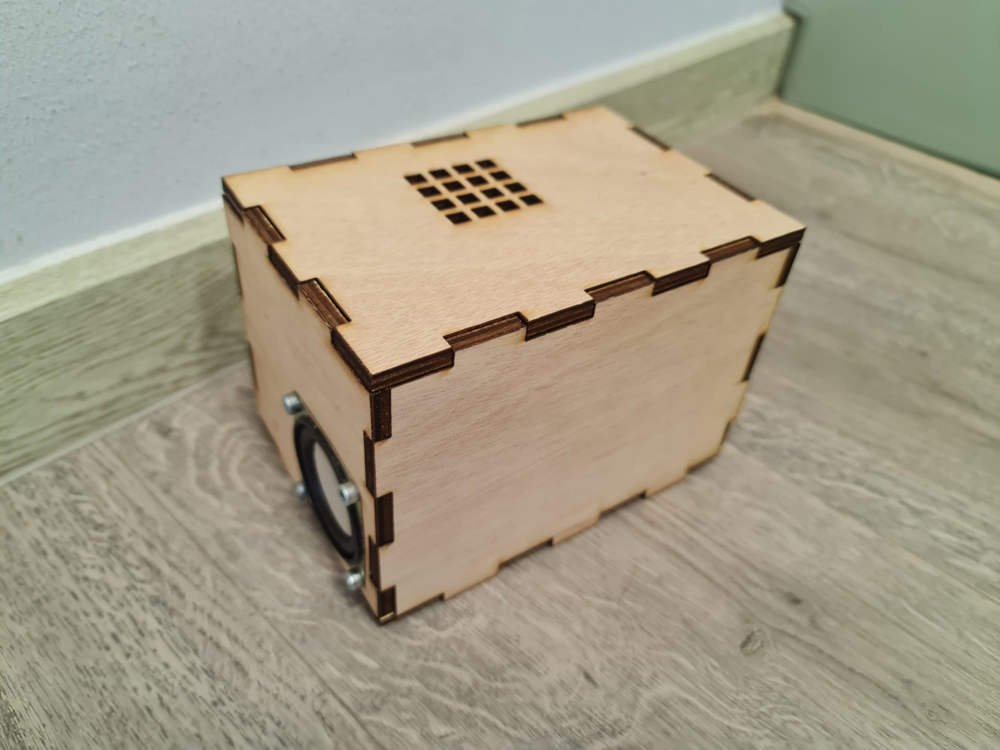
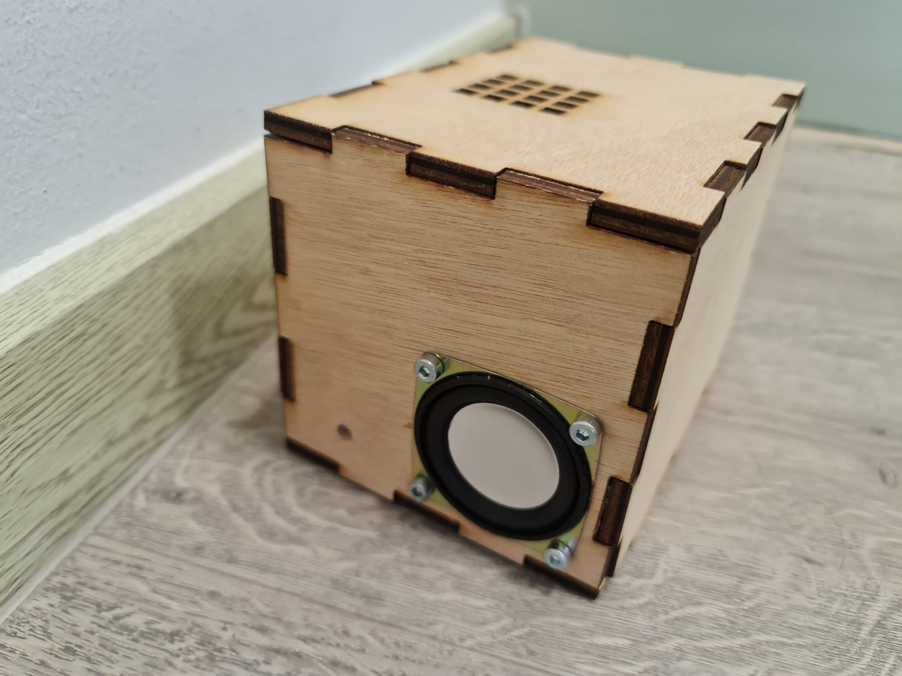
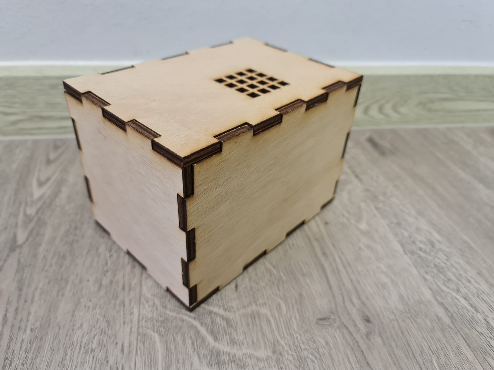
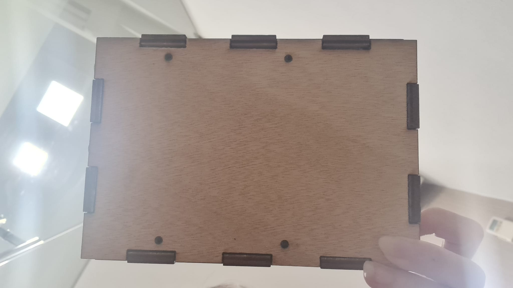
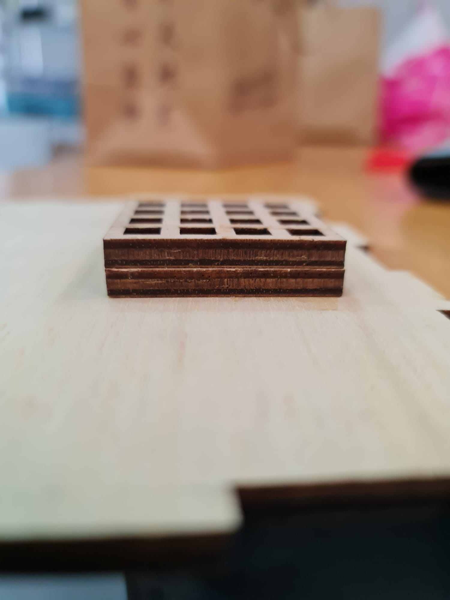

For this project, I lazer cutted the casing needed for the project. The box model is shown below.
The cutting of the box itself initially had some problems. First is that the board was not properly pinned down and when I had to cut the piece again as the cut was not deep enought the first round, there left an outline of it that sometimes chipped off. In addition, the hole for the speaker was too small and the holes for the screws did not line up. Thus I redesigned it to the model showned above and lazer cutted it again while being mindful of properly pinning the board down this time. The resulting piece is shown below.




After playing around and testing the work, I found that the keys could not properly go onto the button or was just sliding into the box, this was before the addition of keycaps. I fixed this by lazer cutting 2 of these pieces shown below.
What it looked like on the inside after the pieces were added on to the top piece.

These pieces did their job and held the keys in place. The casing was then completed and the project could be assembled now.